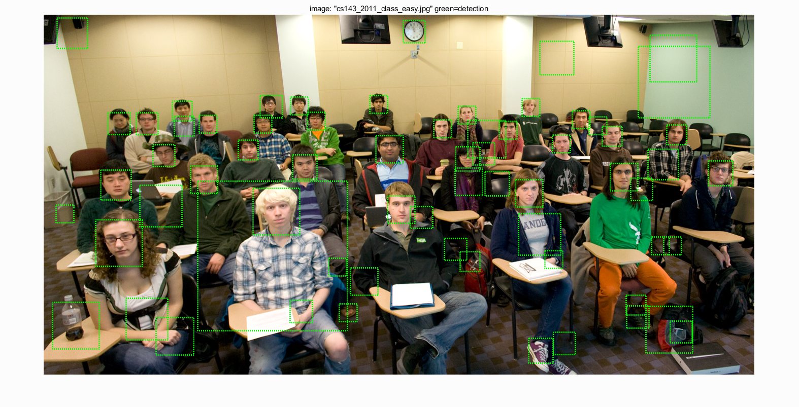
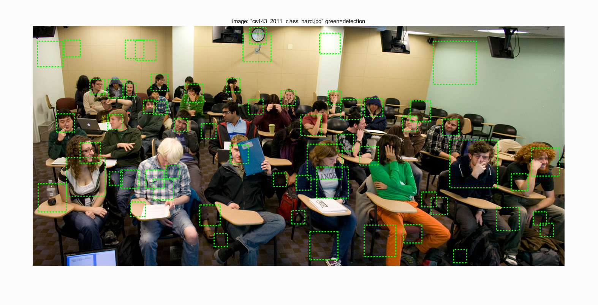
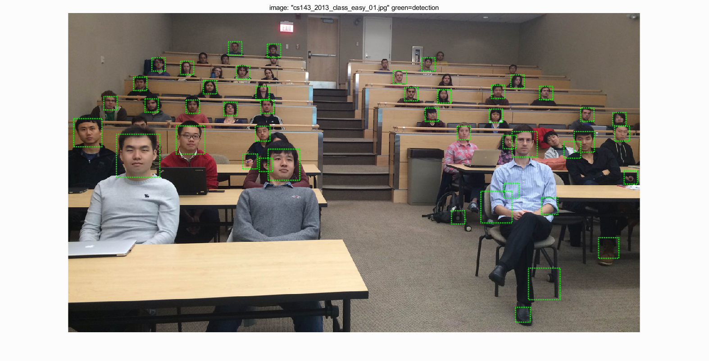
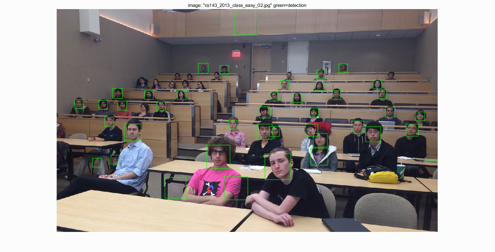
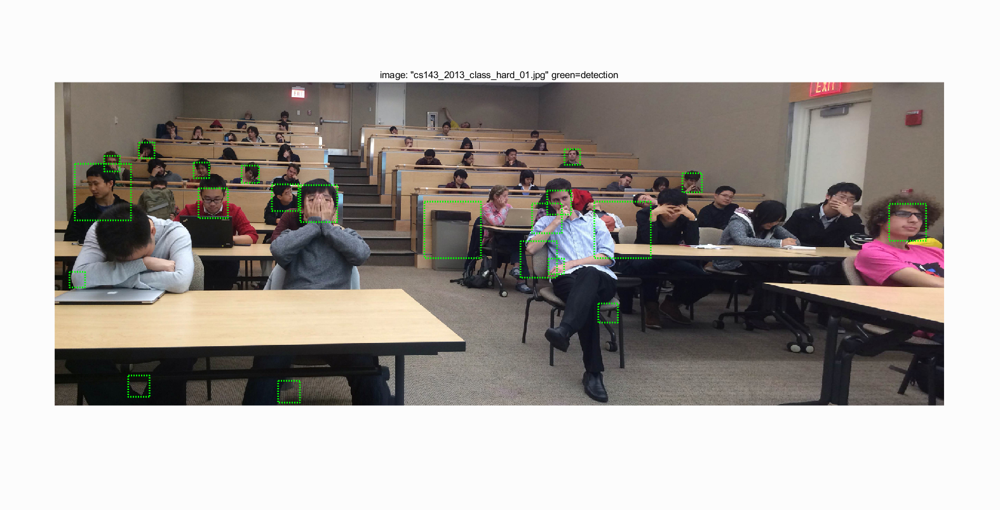
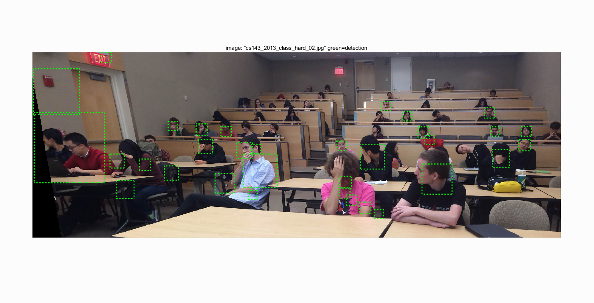
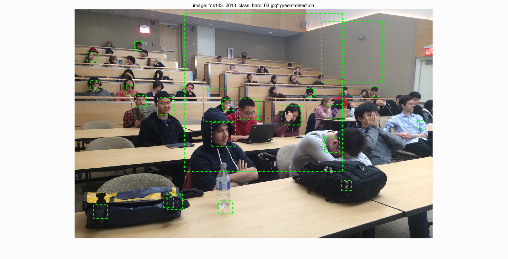
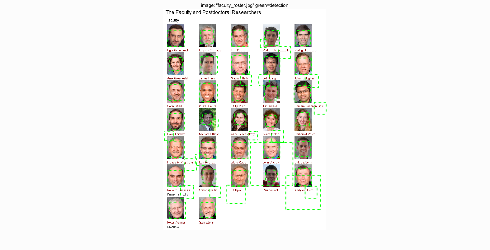
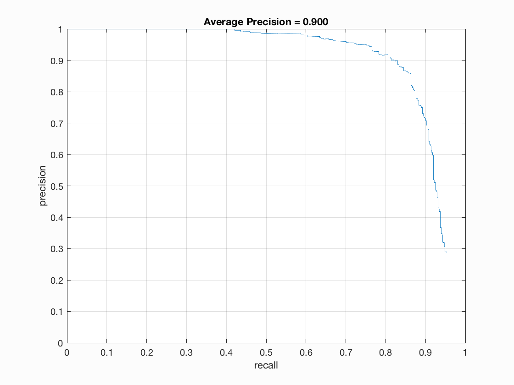

Our core algorithm for this project is Hog feature extraction and SVM classifier.
Before we start our experiment, we need to firstly download folder "data/" from the course page and then put it into the same folder as "code/" and "html/".
We load all positive examples from "data/caltech_faces/Caltech_CropFaces" and randomly N negative ones from "data/train_non_face_scenes", where we choose N = 10000. Notice that higher value of N will work strictly better. After loading them, we should extract Hog features by calling function "vl_hog" from VLFeat lib. We provide part of example codes on processing positive examples in below.
%example code
features_pos = zeros(num_images, (feature_params.template_size / feature_params.hog_cell_size)^2 * 31);
for index = 1:num_images
img_path = fullfile(train_path_pos, image_files(index).name);
img = imread(img_path);
hog = vl_hog(single(img), feature_params.hog_cell_size);
features_pos(index, :) = hog(:)';
end
For convenience of multi-experiments, we save two matrixs, features_pos and features_neg, into .mat files separately after the first loading.
After obtaining positive and negative examples, we use vl_svmtrain on our training features to get a linear classifier. In vl_svmtrain function, there are 3 parameters: features, labels, lambda, where labels are vectors with -1 and 1 values, and lambda we provide is 0.0001. Maybe smaller lambda will work better. Similar to above, we save parameters w and b of svm classifier into .mat file separately after first loading.
Here we execute a multi-scale detection on each test image, which means that we use sliding-window scanning on certain image in each inner loop, while we resize the image into a smaller scale to repeat the scanning tasks in each outer loop until the final size has reached the template size of Hog detector. So here we have three important parameters: scale, step_size and conf_threshold.
After we choose out all confident boxes, we use non_max_supr_bbox actually get somewhat slow with thousands of initial detections. And finally we can get all of correct boxes. In the following tables we will show our results on data/extra_test_scenes directory and the precision-recall curve.
|     |
|     |
Detection on data/extra_test_scenes, using confidence threshold is 1.2, step size 3, scale rate 0.9

Final Precision-Recall Curve on test_scene set